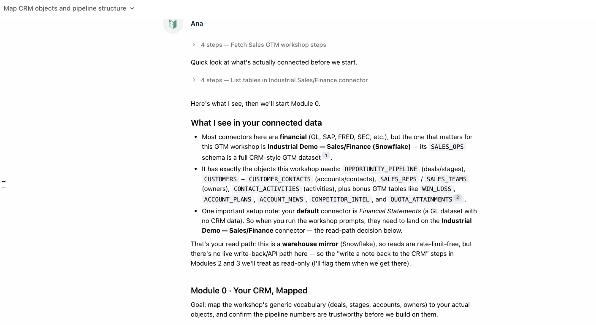
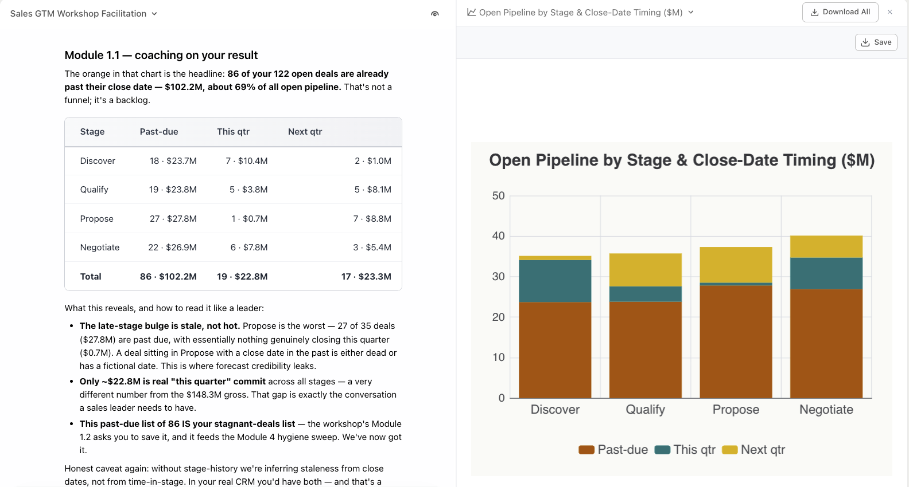
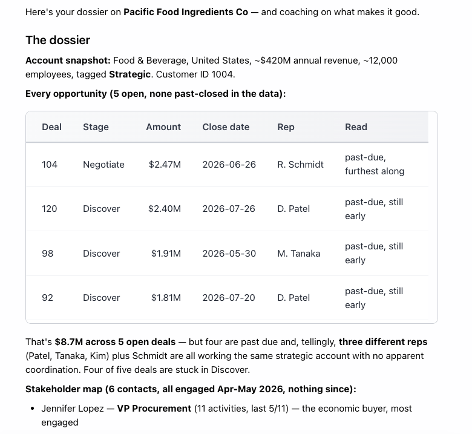

Ana for Sales & GTM Teams
A hands-on workshop for sellers, sales leaders, RevOps, and customer success: pipeline answers in plain English, account research combining your CRM with the outside world, meeting prep that writes itself, automated deal hygiene, and a weekly cadence that runs without an analyst.
Hands-on format: short modules, copy-paste prompts, checkpoints. ~90 minutes.
What you'll be able to do
Pipeline questions
Funnel, movement, forecast view, win/loss, your book — in seconds.
Account research
CRM history + live web signals = dossiers and whitespace maps.
Meetings
Prep cards before the call, capture and follow-up after.
Hygiene & coaching
Fix-forward scrub lists; coaching from patterns; governed definitions.
The cadence, automated
Monday books, review packs, deal-watch agents — running themselves.
GTM prompt pack
Every prompt, organized by job, ready to adapt.
Prerequisites
- CRM connected — direct API or (better for heavy reads) a warehouse mirror
- Optional but powerful: meeting recordings, calendar/email schemas, web search enabled
Module 0 · Your CRM, Mapped
Goal: map this workshop's generic CRM vocabulary to your actual objects, and confirm Ana can see your pipeline.
0.1 · The read-path decision
| Path | Strengths | Watch out |
|---|---|---|
| Direct API connector | Live data; can write (update deals, add notes) | Rate limits can make full-pipeline scans impractical |
| Warehouse mirror | Rate-limit-free reads; joinable with product/finance data | Sync lag (know the cadence); writes still need the API |
0.2 · Build your translation table
Describe the CRM data you can see: what are the objects for companies/accounts, deals/opportunities, contacts, and activities? For deals: what are the stage values in order, and which fields hold amount, close date, and owner? Give me 5 example questions this data can answer.
0.3 · Sanity-check the numbers
What is the total open pipeline right now — count and value by stage? I'll check this against [the CRM's own pipeline view / last week's forecast deck].

✅ Checkpoint
Module 1 · Pipeline Questions
Goal: the questions every seller and sales leader asks weekly — answered in seconds.
1.1 · The state of the pipeline
Show open pipeline by stage: count, total value, and average deal size per stage. Then compare to 30 days ago — where did pipeline grow or shrink?
1.2 · What's moving — and what isn't
Which deals changed stage in the last 14 days — list them with from→to, owner, and value. Separately, which open deals haven't had any stage change in 60+ days?
1.3 · This quarter's reality
For deals with close dates this quarter: total value by stage, split by [owner/team]. Which deals carry the most value, and which of those have close dates in the next 2 weeks but are still in early stages?
1.4 · Win/loss patterns
For deals closed in the last 2 quarters: win rate by [segment/source/size band], average days-to-close for won vs lost, and at which stage lost deals most often died. Anything notable about what we win vs lose?
1.5 · My book (for individual sellers)
For deals I own: rank by value, flag anything with no activity in 14+ days, anything with a close date in the past, and anything in [late stage] missing [next step / champion / decision date]. What should I touch today?

✅ Checkpoint
Module 2 · Account & Prospect Research
Goal: combine what your CRM knows with what the world knows — dossiers, whitespace, and signals in minutes, not afternoons.
2.1 · The account dossier
Build a dossier on [account]: everything in our CRM (deals past and present, contacts, recent activities, notes), plus — using web search — recent news, leadership changes, and anything suggesting budget or priority shifts. End with three angles for our next conversation.
2.2 · Whitespace in your book
Across my accounts: which have [product/tier] but not [other product]? Which look like our best customers (by [size/industry/usage]) but have unusually small deals? Rank the expansion whitespace.
2.3 · Signals worth acting on
For my open deals and target accounts, check for signals: web-search news (funding, leadership, layoffs, product launches) in the last 30 days, plus internal signals — new contacts added, usage spikes or drops [if available]. Which three accounts have the strongest reason for outreach this week?
2.4 · Write-back: capture what you learned — optional
If your CRM is connected via API (the write path):
Add a note to [account] in the CRM summarizing this research: the three conversation angles, key signals found, and the date. Don't modify any other fields.

✅ Checkpoint
Module 3 · Meeting Prep & Follow-Up
Goal: prep that writes itself before the call, follow-up that captures itself after.
3.1 · Prep for today
Look at my calendar for [today/tomorrow]. For each external meeting: which account is it (match attendee domains to CRM accounts), what's the deal state, what happened in our last interactions, and — one web search each — anything new about the company? One prep card per meeting.
3.2 · Deep prep for the big one
Deep prep for my meeting with [account] on [date]: full deal history and stakeholder map from the CRM; summaries of previous meeting recordings if available; their likely objections based on the deal's stage and history; and the three things we must accomplish in this meeting for the deal to advance.
3.3 · After the call: capture and act
From my [account] call today: summarize what was discussed, list commitments made (ours and theirs) with owners, flag any new stakeholders mentioned, and draft a follow-up email confirming next steps.
3.4 · The weekly retro
Across my external meetings this week: which accounts did I touch, what commitments are now outstanding (mine and theirs), and which deals had meetings but no stage movement or follow-up logged?

✅ Checkpoint
Module 4 · Deal Hygiene & Coaching
Goal: hygiene from nagging to automation, win/loss data to coaching, and definitions made permanent.
4.1 · The hygiene sweep
Audit all open deals for hygiene: missing or past close dates, missing amounts, missing [next step / champion fields], no activity in 21+ days, and stage older than [your stage-SLA]. Group by owner, worst first.
4.2 · Fix-forward, not blame
For [owner]'s flagged deals: draft the specific update needed for each — a realistic close date based on stage history, the missing field, or a recommended disqualification if dead. Make it a checklist they can clear in 15 minutes.
4.3 · Coaching from the data
Compare [rep] to team medians over the last 2 quarters: win rate, average deal size, days-in-stage by stage, activities per open deal, and where their lost deals die. What are their two biggest gaps, and what does the top performer do differently at exactly those points?
4.4 · Make definitions permanent
Save to the ontology: our official definitions — "open pipeline" means [stages X–Y, excluding Z record types]; "stalled" means [no stage change in 60 days AND no activity in 21]; "commit" means [definition]. Propose the patch for admin review.
✅ Checkpoint
Module 5 · The GTM Cadence, Automated
Goal: wire the previous modules into a weekly rhythm that runs itself.
5.1 · The Monday morning playbook (per seller)
Create a playbook "My Book Monday" that runs Mondays at 7am: my open deals ranked by value; anything with no activity in 14+ days; past-due close dates; deals in [late stage] missing [key fields]; and my three most-urgent actions. Concise style. Email it to me.
5.2 · The pipeline review pack (per team)
Create a playbook "Pipeline Review Pack" that runs [Wednesday 7am, before the 9am review]: funnel by stage vs last week; deals that moved; the hygiene sweep grouped by owner; this quarter's committed deals with risk flags; win/loss trend. Post it to [#sales-leadership] so we can ask follow-ups in thread.
5.3 · The deal-watch agent
Create a feed agent "Deal Watch" that checks the pipeline every weekday at 8am and posts ONLY when: a deal over [$X] changes stage (either direction); a committed deal's close date slips; a deal over [$X] goes quiet for 14 days; or total pipeline moves more than [Y]% in a week. Include the deal, the change, and one sentence of why it matters. If nothing qualifies, stay silent.
5.4 · The renewal/health watch (CS variant)
Create a feed agent "Renewal Radar" that runs weekly: accounts with renewals in the next 90 days, each scored on [usage trend, support volume, engagement recency]. Post only accounts that turned red or newly green. Relay to [#customer-success].
5.5 · Close the loop
| When | What | Primitive |
|---|---|---|
| Monday 7am | Each seller's book + actions | Playbook (per seller) |
| Wednesday 7am | Pipeline review pack | Playbook → Slack channel |
| Weekdays 8am | Material deal changes only | Feed agent |
| Weekly | Renewal risk changes | Feed agent (CS) |
| Quarterly | Win/loss deep dive | Playbook |
Underneath all of it: the ontology patch from Module 4.4 — one set of numbers everywhere. See the GTM Prompt Pack (the final section of this workshop) for the full prompt collection.

✅ Checkpoint
GTM Prompt Pack
Every prompt from the workshop plus extras, organized by job. Replace [brackets]; map object names per your Module 0 translation table.
Pipeline
Show open pipeline by stage: count, total value, average deal size. Compare to 30 days ago — where did pipeline grow or shrink?
Which deals changed stage in the last 14 days (from→to, owner, value)? Which open deals have had no stage change in 60+ days?
For deals closing this quarter: value by stage by [owner/team]; flag early-stage deals with close dates in the next 2 weeks.
Win rate by [segment/source/size] for the last 2 quarters; average days-to-close won vs lost; at which stage do lost deals die?
For deals I own: rank by value; flag no-activity-14d, past close dates, and late-stage deals missing [fields]. What should I touch today?
Research
Build a dossier on [account]: CRM history (deals, contacts, activities, notes) + web search (news, leadership changes, budget signals). End with three conversation angles.
Across my accounts: who has [product A] but not [product B]? Which look like our best customers but have unusually small deals? Rank the whitespace.
Check my open deals and target accounts for signals (funding, leadership, layoffs, launches in 30 days; new contacts; usage changes). Top three outreach targets this week, with openers.
Add a note to [account] summarizing this research: angles, signals, date. Don't modify any other fields.
Meetings
For each external meeting [today/tomorrow] (match attendee domains to accounts): deal state, last interactions, one piece of fresh news. One prep card each.
Deep prep for [account] on [date]: deal history, stakeholder map, recording summaries, likely objections, and the three things this meeting must accomplish.
From my [account] call today: summary, commitments with owners, new stakeholders, and a draft follow-up email confirming next steps.
This week: which accounts did I meet, what commitments are outstanding, which deals had meetings but no movement or follow-up?
Hygiene & coaching
Audit open deals: missing/past close dates, missing amounts, missing [fields], no activity 21d+, stage older than [SLA]. Group by owner, worst first.
For [owner]'s flagged deals: draft the specific update each needs — realistic close date, missing field, or recommended disqualification. A 15-minute checklist.
Compare [rep] to team medians (win rate, deal size, days-in-stage, activities per deal, where losses die). Two biggest gaps, and what the top performer does differently there.
Save to the ontology: "open pipeline" = [definition]; "stalled" = [definition]; "commit" = [definition]. Propose the patch.
Automation (see Automation workshop for mechanics)
Create a playbook "My Book Monday" (Mondays 7am): my deals ranked, stale flags, past-due dates, missing fields, top three actions. Concise. Email me.
Create a playbook "Pipeline Review Pack" ([day] 7am): funnel vs last week, movers, hygiene by owner, committed deals with risk flags, win/loss trend. Post to [#channel].
Create a feed agent "Deal Watch" (weekdays 8am) that posts ONLY on: [$X]+ deal stage changes, committed close-date slips, [$X]+ deals quiet 14d, pipeline moving [Y]%+ in a week. Silent otherwise.
Create a feed agent "Renewal Radar" (weekly): renewals in 90 days scored on [usage, support, engagement]; post only color changes. Relay to [#cs].